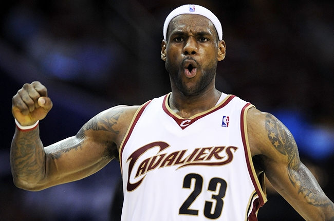
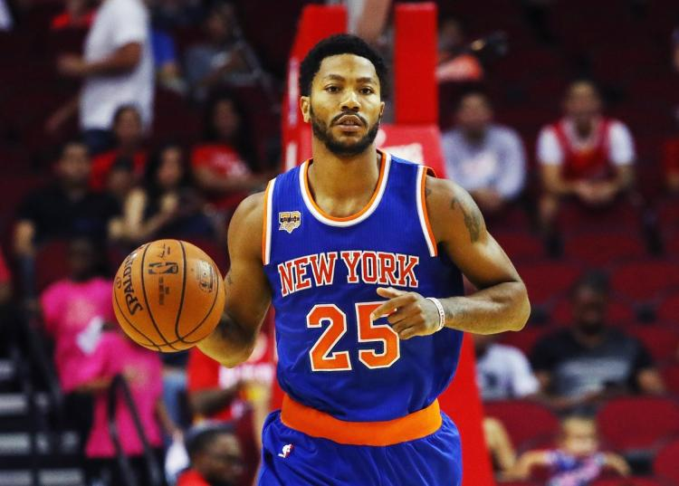
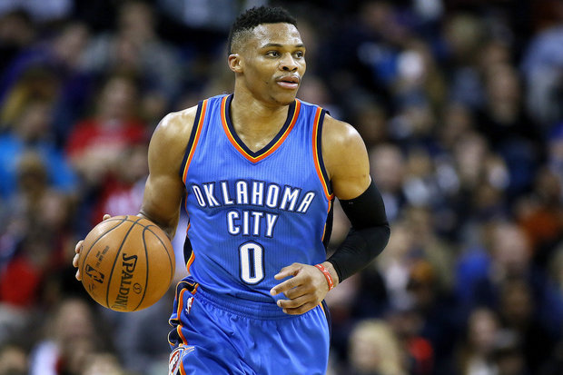
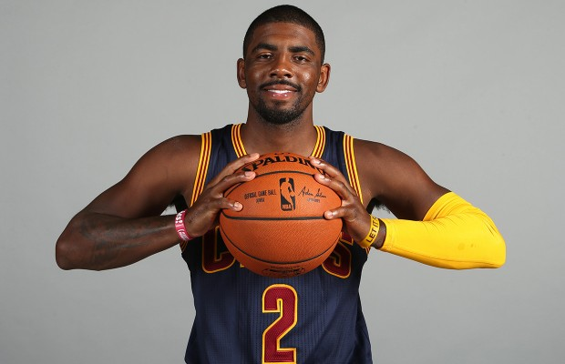

In questa pagina potrai trovare delle informazione inerenti a diverse stars della NBA.
Lebron James

LeBron James ha passato la sua infanzia nei bassifondi di Akron, in Ohio.
È cresciuto con la madre Gloria, e spesso, per difficoltà economiche, si trovavano senza casa e a vivere presso degli amici.
La figura del padre è avvolta dal mistero e di lui sappiamo solo che fu compagno, ai tempi del liceo, della madre Gloria.
James ha due figli e una figlia con la sua fidanzata del liceo, Savannah Brinson, con cui è convolato a nozze il 14 settembre 2013 a San Diego.
Il primogenito, LeBron Jr., è nato il 6 ottobre 2004; il secondo, Bryce Maximus, il 14 giugno 2007 e l'ultimogenita, Zhuri, il 22 ottobre 2014.
È considerato uno dei migliori cestisti di tutti i tempi. Selezionato con la prima scelta assoluta al Draft NBA 2003 dai Cleveland Cavaliers, nominato NBA Rookie of the Year (nel 2004) e quattro volte NBA Most Valuable Player (nel 2009, nel 2010, nel 2012 e nel 2013), ha vinto tre titoli NBA (con i Miami Heat nel 2012 e nel 2013 e con i Cleveland Cavaliers nel 2016) venendo eletto tutte e tre le volte NBA Finals Most Valuable Player.
Con la Nazionale statunitense ha partecipato a tre Olimpiadi, vincendo la medaglia di bronzo nel 2004 alle Olimpiadi di Atene e
la medaglia d'oro ai Giochi di Pechino 2008 e ai Giochi di Londra 2012.
Derrick M. Rose

Derrick Martell Rose (Chicago, 4 ottobre 1988) è un cestista statunitense, professionista nella NBA con i New York Knicks.
Nella sua stagione d'esordio ha vinto il premio di matricola dell'anno e nel 2011, a soli 22 anni, ha ricevuto il prestigioso titolo di MVP,
che lo rende il più giovane detentore del titolo della storia.
La caratteristica principale di Rose è la grande velocità di movimento.
Tra il secondo ed il terzo anno di NBA ha migliorato significativamente il suo tiro, raggiungendo percentuali discrete, seppur altalenanti.
Indice
 Wardell Stephen "Steph" Curry II (Akron, 14 marzo 1988) è un cestista statunitense.
MVP delle stagioni 2014-2015 e 2015-2016, è considerato da molti il miglior tiratore della storia dell'NBA.
Nella stagione 2014-2015 si è laureato campione NBA con i Golden State Warriors battendo in finale i Cleveland Cavaliers.
Wardell Stephen "Steph" Curry II (Akron, 14 marzo 1988) è un cestista statunitense.
MVP delle stagioni 2014-2015 e 2015-2016, è considerato da molti il miglior tiratore della storia dell'NBA.
Nella stagione 2014-2015 si è laureato campione NBA con i Golden State Warriors battendo in finale i Cleveland Cavaliers.
Nella stagione NBA 2015-2016 ha stabilito, con i suoi Golden State Warriors, il record di partite vinte in regular season (73, a fronte di 9 sconfitte),
battendo il precedente primato dei Chicago Bulls (72 vittorie e 10 sconfitte nella stagione 1995-1996). Nella medesima stagione, è diventato
il primo giocatore della storia dell'NBA ad essere stato nominato all'unanimità MVP della regular season.
Convocato 4 volte in totale agli NBA All-Star Game, è inoltre il giocatore col maggior numero di triple messe a segno in una singola stagione (402, nell'annata 2015-2016).
È figlio di Dell Curry, ex giocatore NBA, e fratello maggiore di Seth Curry, anche lui professionista nella NBA con i Dallas Mavericks.
Indice

Russell Westbrook (Long Beach, 12 novembre 1988) è un cestista statunitense, professionista nella NBA con gli Oklahoma City Thunder.
Ha partecipato sei volte all'NBA All-Star Game, risultando MVP dell'evento nel 2015 e nel 2016.
Dopo un'estate che vede il passaggio del compagno Kevin Durant ai Golden State Warriors, Westbrook inizia la stagione con prestazioni di
alto livello, mantenendo una tripla-doppia di media. Ciononostante, non viene convocato come titolare all'All Star Game: gli vengono infatti preferiti James Harden e
Stephen Curry.
Indice

Kyrie Andrew Irving (Melbourne, 23 marzo 1992) è un cestista australiano con cittadinanza statunitense che gioca nella NBA
nei Cleveland Cavaliers.È una delle migliori Point-Guard della NBA, essendo dotato di un ottimo palleggio in grado di battere facilmente
l'avversario che gli permette di penetrare in area o fare un arresto e tiro ed avendo un ottimo tiro da 3 punti e dalla media distanza.
Ha inoltre un'ottima visione di gioco ed è in grado di gestire l'attacco nel migliore dei modi sfruttando la sua velocità per attaccare subito il canestro.
Indice
Kobe Bryant
Kobe Bean Bryant (Filadelfia, 23 agosto 1978) è un ex cestista statunitense. Ha giocato prevalentemente nel ruolo di guardia tiratrice
ed è considerato tra i migliori cestisti della storia dell'NBA.
Figlio di Joe Bryant, è cresciuto cestisticamente in Italia, dove ha imparato i fondamentali europei, e ha militato per tutta la sua carriera NBA
nei Los Angeles Lakers, squadra con cui ha conquistato 5 titoli. Con la Nazionale statunitense ha partecipato ai FIBA Americas Championship 2007
e ai giochi olimpici di Pechino 2008 e di Londra 2012, vincendo la medaglia d'oro in tutte e tre le manifestazioni.
Secondo quanto riportato dalla rivista Forbes, è stato il 10° sportivo più pagato del mondo nel 2014, con un guadagno di 49,5 milioni di dollari.
Indice
Michael Jordan
Michael Jeffrey Jordan, conosciuto anche con le sue iniziali, MJ , è un ex cestista statunitense,
oltreché principale azionista e presidente della squadra di pallacanestro degli Charlotte Hornets.
Jordan è stato sei volte Campione NBA, realizzando coi Chicago Bulls ben 2 Three-peat, termine con
il quale si indica la vittoria delle NBA Finals per 3 edizioni annuali di fila (91-92-93 e 96-97-98),
impresa riuscita finora solo a lui e a Scottie Pippen, che era in squadra con lui.
Indice